The Township of Marrowmere, Ontario
The Town
A granite quarry township on the north shore of Cradock Lake in northwestern Ontario, three kilometres up a paved road from Highway 17. It lived on granite for ninety-four years. Since 1976 it has lived on the Show.
Every visitor walks in over the old viaduct and through the Gate, where IT WILL HOLD is cut in black stone. Beyond it are Market Square, the Ghost Hotel, the Black Stair down to the shore, the quarry the town calls the Bite, and a cemetery cut into the ridge. On closing night, Thursday 24 September 2026, the coaches arrive at quarter to six and the lamps come on at dusk.
Some of these places move. Point at one, or tab to it, to watch.
From above

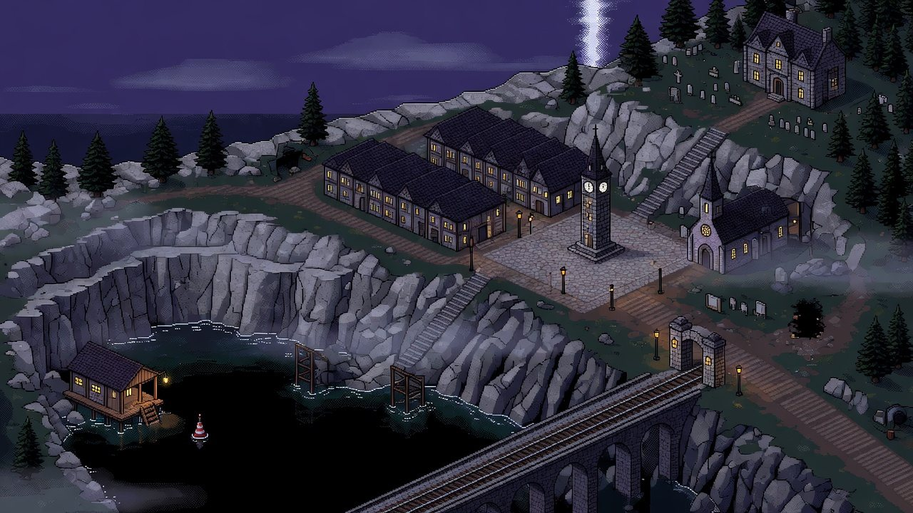
Exteriors
Out on the street strips: the Gate and the square, the shore below the Black Stair, the quarry, the ridge and the woods.
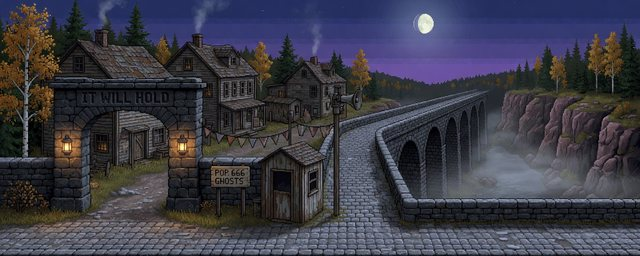
The Gate and Viaduct
Every visitor walks in over the viaduct and through the Gate. IT WILL HOLD, says the arch.
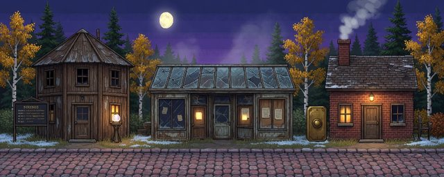
The Approach
Fortune, Chase and Doorbell: three attractions on the old road in, each older than the fright it sells.
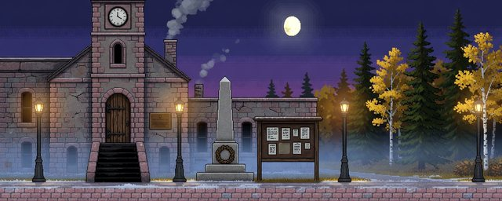
Town Hall and Tower
Clock tower, wreath and noticeboard. Tonight every new notice is a closure, by order of the Clerk.
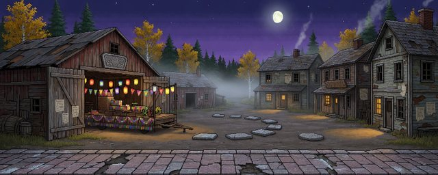
The Parade Route
Six flush footings mark where the 1919 Peace Arch stood for exactly one day. Mind the gaps.

Scare House and Keepsake Shop
Pay office, fright meter, monumental masons. Marrowmere sells you a scare, then a souvenir, then a headstone.
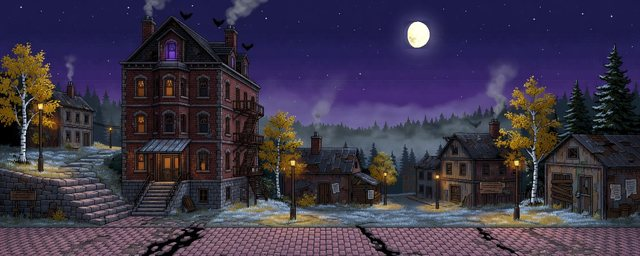
The Ghost Hotel
Built so every front room could see the viaduct. The attic light is violet, and nobody asks why.
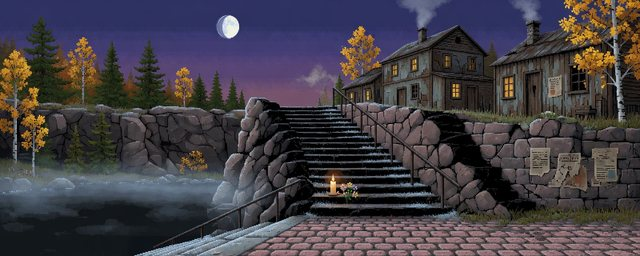
The Black Stair
212 steps cut down the black seam, one handrail, frost on every tread. Somebody has left flowers again.

Low Street
Lakeside cottages at the bottom of the Black Stair, and the smell of chips halfway up it.
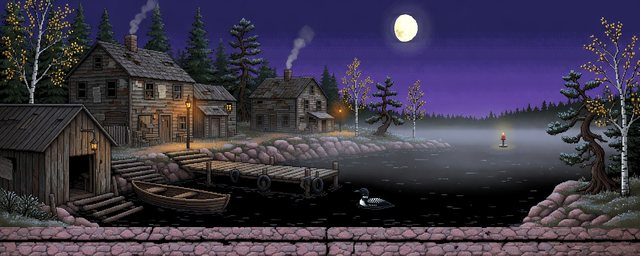
The Shore and Boathouse
A lone buoy marks the chapel the Company drowned in 1931. Some nights, its bell still rings.

The Bite
The dead quarry at the ridge's west end. Note the black seam in the rock. The quarrymen did.
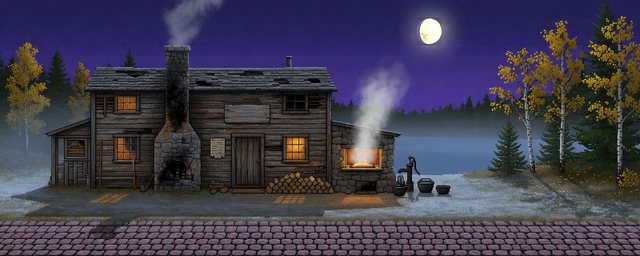
The Bunkhouse Yard
Rebuilt after the 1898 fire, scorch marks and all. Hedge's hatch is open, and the portions are enormous.
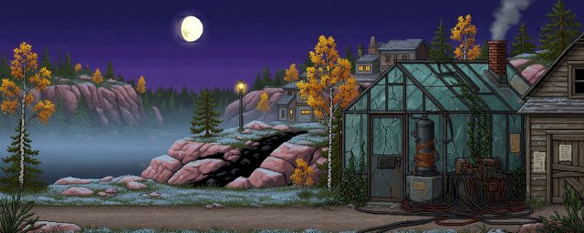
Voss's Lab
A cracked glasshouse, a stone coil in copper wire, cables everywhere. Doctor Voss says it is safe now.
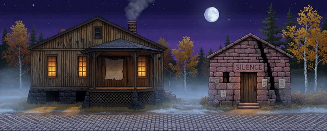
Band Hall, Chapel Row
Dancing in the timber hall. Next door, the reading room still says SILENCE. Mostly.
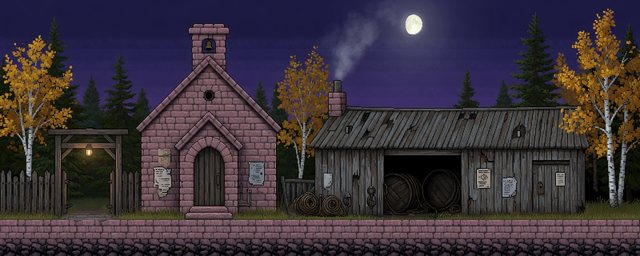
The Church and Wail House
A pink granite church, a lantern at the lychgate, and next door, a rope house that wails.
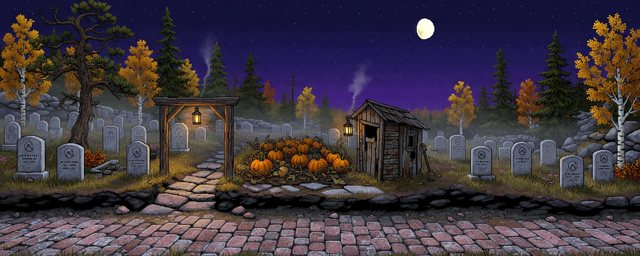
The Cemetery and the Patch
Graves cut into the ridge, a sexton's lantern at the lychgate, and pumpkins growing over the old path.
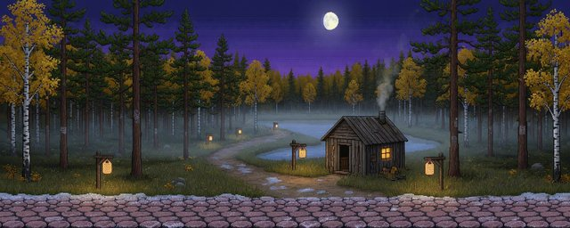
Werewolf Woods
Jack pine in rows, lamps along the trail, a tea hut. The werewolf is local, and very polite.
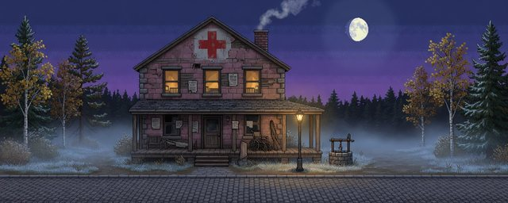
The Still House
The old outpost hospital at the top of town. Nobody queues here, and nobody rings the bell.
Interiors
Through the doors: offices, kitchens, halls and attics, most with someone inside who would rather you knocked first.

The Clerk's Office
Day book, inkwell, keys, and a stair into the Tower. The Clerk writes without note or comment. Mostly.
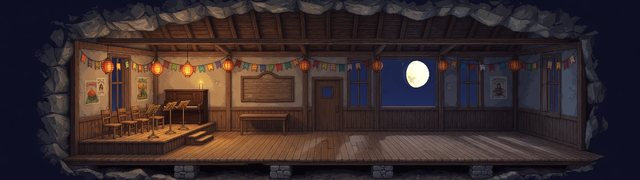
Band Hall Floor
Paper lanterns, bunting, music stands and a piano: the hall is dressed for a harvest ball.
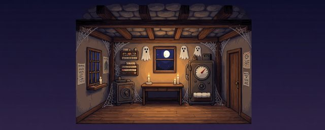
Inside the Scare House
The Company pay office, now home to the Scarometer, which measures fright and has opinions.
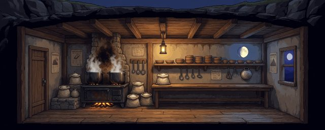
Hedge's Kitchen
Huge pots, a scorched chimney breast, and twenty-three bowls on the high shelf that nobody uses.
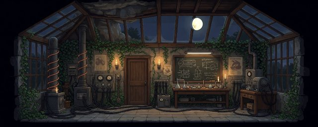
Inside Voss's Lab
Switchgear from 1961, chalk diagrams, and a stone coil meant to light the town. It nearly did.
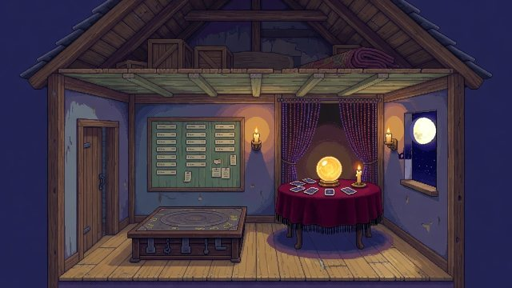
Fortune, the Weigh House
The old weigh-scale house, now a fortune-teller's booth. Step on the scale; the crystal ball does the rest.
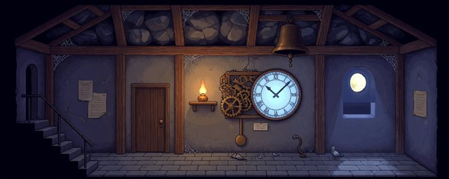
The Clock Tower Works
Gears, pendulum and bell, up the tower stair. At ten, count the strokes. Then count them again.
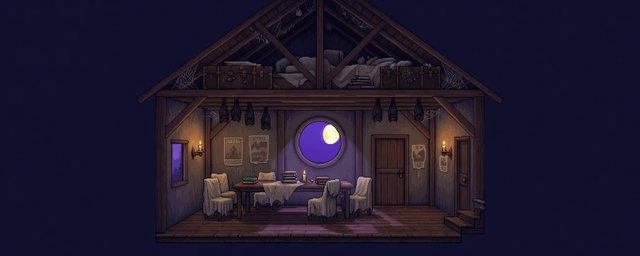
The Hotel Attic
Once the council's room. The Attic Committee meets here now, upside down, and minutes everything.
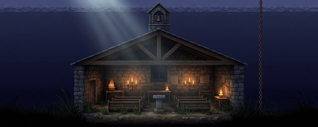
The Drowned Chapel
Under the Mere, the Low Row chapel keeps its pews, its lectern and its bell. Mostly quiet.
Crossings
The ways between: the road up from Highway 17, the coach park, the viaduct and the gorge beneath it, and Station Road from the Gate up to the Square.
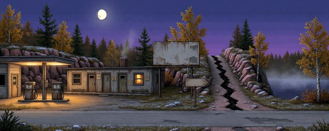
The Highway 17 Turn-off
A gas bar, a motel, one light on. The dead are three kilometres up that road.
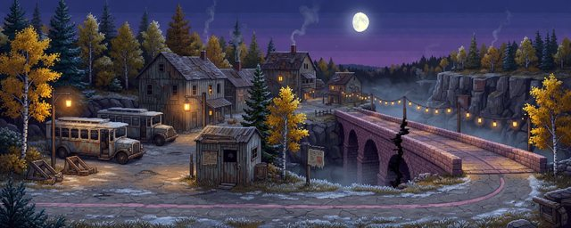
The Coach Park
The old freight yard, where the coaches wait and every visitor walks the rest.
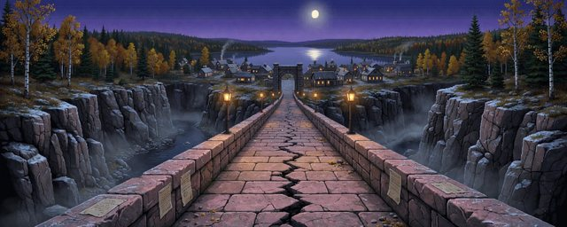
The Viaduct, Midspan
Halfway across: the gorge below, the Gate ahead, and fresh notices pinned along the parapets.
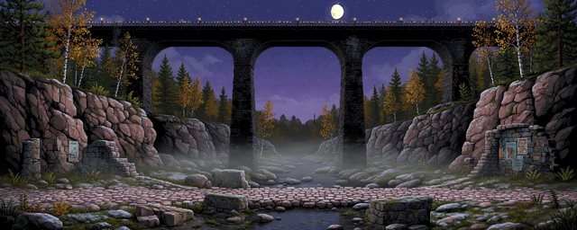
Down in the Gill
Sallow Creek, called the Gill, far below the viaduct's black piers. Look up once. Then don't.
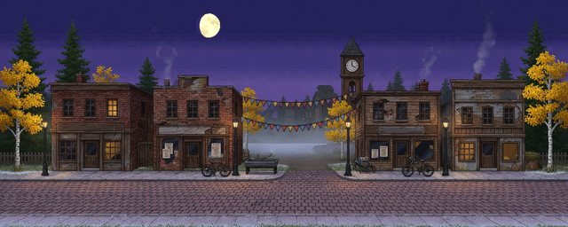
Station Road
The lit street from the Gate up to the Square. The bunting comes down tomorrow, probably.
Walk it on closing night
Coming 2027. Wishlist Marrowmere on Steam and you will hear first.